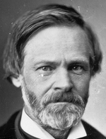

|

|

|
|
|
John Sherman was born in Lancaster, Ohio, the son of Charles and Mary
Hoyt Sherman and the brother of William Tecumseh Sherman . After his
father, a lawyer and judge, died when John was a child, he was brought
up by a paternal cousin in Mt. Vernon, Virginia. Educated at the public
schools in Mt. Vernon and Lancaster, he read law with his brother
Charles in Mansfield and was admitted to the bar in 1844. He was elected
to Congress as an antislavery Whig in 1854, rendered a report on the
Kansas troubles in 1856, was twice reelected as a Republican, and was a
candidate for Speaker of the House in 1859. Deprived of this honor
because of his endorsement of Hinton Rowan Helper's book The Impending
Crisis of the South, in 1861 he was elected to the Senate, where
Treasury Secretary Salmon P. Chase relied on him to pass the Legal
Tender and National Banking Acts.
During Reconstruction, as a moderate Republican, he sought to bridge
the gap between Congress and President Andrew Johnson but was alienated
by the President's veto of the Civil Rights Bill. Nonetheless, he
opposed the Tenure of Office Act's applicability to members of the
cabinet and was the author of the compromise formula that could be
understood as either covering or excluding the Secretary of War.
Consequently, while he agreed to the conviction of the President on the
articles of impeachment actually submitted to a vote, the Senate never
took up Article I concerning the dismissal of Stanton, which Sherman
could not have supported. During the negotiations leading to the
Compromise of 1877, he was one of the Senators arranging the final
terms.
Sherman was particularly interested in financial affairs. Opposed to
Treasury Secretary Hugh McCulloch's efforts to retire the greenbacks
immediately after the war, he was the author of the law of 1874 calling
for the resumption of specie payments by 1879 as well as the Silver
Purchase Act of 1890, which was a compromise to satisfy the silver
elements. In 1877 Rutherford B. Hayes appointed Sherman Secretary of the
Treasury; in 1880, 1886, and 1892 he was reelected to the Senate, over
which he presided from 1885 to 1887, and in 1890 he gave his name to the
Sherman Anti-Trust Act, the first measure seeking to control the
formation of combinations in business. A candidate for the presidential
nomination in 188O, 1884, and 1888, he failed to secure the prize. In
1897 William McKinley appointed him Secretary of State, but he was too
feeble to carry out his duties efficiently and resigned in 1898. He died
in Washington in 1900.
Source: Hans Trefousse, Historical Dictionary of Reconstruction
(Westport, CT: Greenwood Press, 1991), 199-200.
|